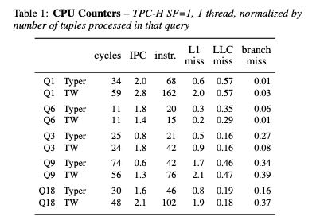
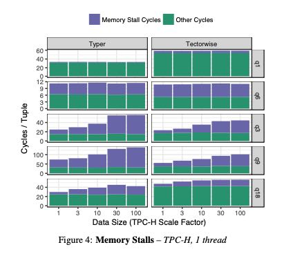
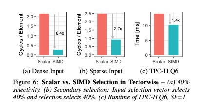
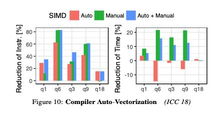

Everything You Always Wanted to Know About Compiled and Vectorized Queries But Were Afraid to Ask
基于Compiled和基于Vectorized实现的查询引擎（后面简称CV），优劣势分别是什么？它们之间差距可以有多大？结论就是：C方式生成的CPU指令更少，比较适合处理可以全部放在cache中的数据。而V方式生成的CPU指令更多，并且因为是向量化处理，所以IPC更高更容易躲避cache miss延迟。V方式还有一个问题就是，如果在做多个列join时候，可能需要将这些列都进行物化，这个cost不能忽略。两者各有优劣，不过我感觉是，总的来说C方式效率略高，但是在调试以及生成代码上比较复杂。
下图是TPCH, SF(scale-factor=1)，单线程情况下的性能对比。其中Typer表示C方式，TW表示V方式。可以看到Instr上C更少，整体下来cycles来说C也更少，但是IPC上V方式更高。L1 miss以及branch miss因为C方式指令更少，所以也更低。LLC miss主要是数据miss, 两者似乎差不太多。

下图则是花费在wait memory上面的时间(memory stall cycles). 可以看到TW(也就是V方式)在这方面比较有优势，而且随着数据量增大似乎也没有太大变化，比较稳定。

To summarize, looking at the micro-architectural footprint of the two models we found that (1) both are efficient and fairly close in performance, (2) Typer is more efficient for computational queries with few cache misses, and (3) Tectorwise is slightly better at hid- ing cache miss latency.
关于SIMD以及编译器自动向量化上。首先SIMD到底有多少加速作用？这个取决于input上面的selectivity. 下面分别是dense/sparse/tpch-q6 实际input上面SIMD的加速效果对比。可以看到在dense情况下面效果非常好，越稀疏的数据SIMD加速效果就不大了。可以想象对于有selection的input, 为了充分使用SIMD我们还可能需要对数据进行压缩，否则我们就要面临许多branch miss以及cache miss，这样对于SIMD影响还是比较大的。

编译器的自动向量化效果如何呢？下面是作者的实验结果。结论就是某些运算会向量化，但是某些却没有，甚至有时候向量化还是带来副作用。稳定起见，关键路径上的向量化最好还是手写。

作者认为对于OLAP系统来说，大部分时间受限于在data access上面，所以V方式使用SIMD并不是最关键的因素。（我的理解是，即便是去掉了，可能也不会减少太多的时间。编译器在向量化展开上
Fundamentally, this is because most OLAP queries are bound by data access, which does not (yet) bene- fit much from SIMD, and not by computation, which is the strength of SIMD. Coming back to the comparison between data-centric compilation and vectorization, we therefore argue that SIMD does not shift the balance in favor of vectorization much.
在多核调度上，实验对比了10-core 20 hyper-threads的时候，Hyper(C方式)使用Morsel-driven的方式进行调度可以做到11.7x的加速比，而VectorWise(V方式)使用exchange-operators的方式进行调度可以做到7.2x的加速比。可以看到morsel-driven这种方式在调度上效率还是更高。
AWS EC2在 $/time 上，大实例似乎并没有什么优势，可以认为scale-out还没有做到完全的线性。
We also conducted these experiments on AWS EC2 machines and found that both systems scale equally well. However, we ob- serve that when we use a larger EC2 instance to speed up query ex- ecution, the price per query rises. For example, the geometric mean over our TPC-H queries for a m5.2xlarge instance with 8 vCPUs is 0.0002$ per query (2027 ms runtime). On an instance with 48 cores it is 0.00034$ per query (534 ms runtime). So in this case, running queries 4× faster costs 1.7× more.
LLVM在编译时间上和code size是超线性的：包含许多operators或者是涉及到许多columns的query生成的code可能会非常大，这种情况在OLAP下面可能比较常见。这个时候编译时间就比较长，Hyper解决方法可以有：1. 关闭寄存器分配优化来减少编译时间 2. 减少部分代码的编译而回退到解释器模式。而Spark就更加简单，一旦发现编译出来的JVM bytecode超过8KB的，就回退到解释器模式。